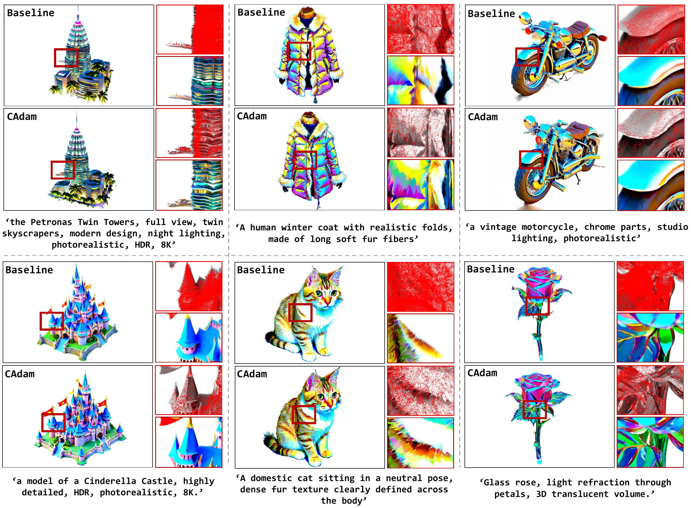
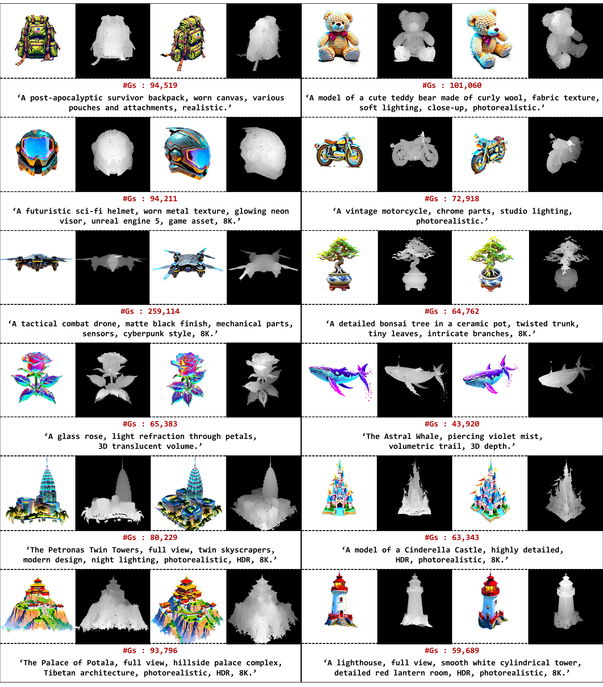
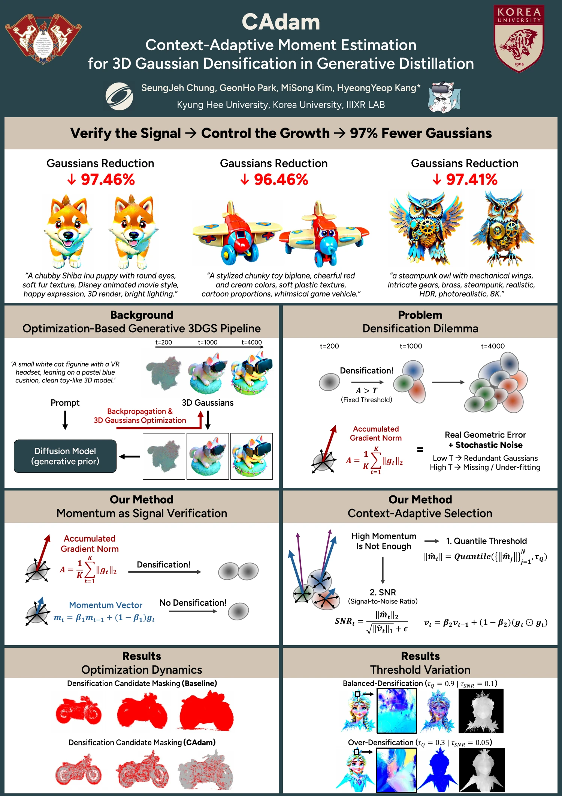

CAdam: Context-Adaptive Moment Estimation for 3D Gaussian Densification in Generative Distillation
Implementation code has not yet been released in the repository.
Abstract
Adaptive densification is the engine of 3D Gaussian Splatting (3DGS). However, when transposed to the optimization-based Generative Distillation paradigm, this reconstruction-native mechanism reveals fundamental limitations, resulting in inefficient representations cluttered with redundant primitives. We diagnose this failure as a Densification Dilemma stemming from the stochastic nature of generative guidance: the standard magnitude-based accumulation indiscriminately aggregates transient noise alongside geometric signals, making it difficult to strike a balance between over-densification and under-fitting. To resolve this, we introduce Context-Adaptive Moment Estimation (CAdam), a novel framework that reinterprets densification as a statistically grounded signal verification problem. CAdam leverages the first moment of gradients to exploit the interference principle—where stochastic fluctuations cancel out via destructive interference while consistent geometric drifts accumulate via constructive interference—effectively disentangling the underlying signal from the generative noise floor. This is further augmented by a quantile-based context awareness and an intrinsic Signal-to-Noise Ratio (SNR) gating mechanism, which ensure robust adaptation across optimization stages and enable the soft termination of densification. Extensive experiments across diverse objectives (SDS, ISM, VFDS) and strong generative 3DGS backbones show that CAdam reduces Gaussian count by 85%–97% relative to standard densification while preserving overall comparable perceptual quality. These results highlight signal-aware density control as a practical way to improve memory efficiency in optimization-based generative distillation.

Qualitative comparison with standard densification.

Multi-view RGB renderings and depth maps.

SIGGRAPH 2026 Poster.
BibTeX
@inproceedings{chung2026cadam,
title={{CAdam}: Context-Adaptive Moment Estimation for {3D Gaussian} Densification in Generative Distillation},
author={Chung, SeungJeh and Park, Geonho and Kim, Misong and Kang, HyeongYeop},
booktitle={Proceedings of the Special Interest Group on Computer Graphics and Interactive Techniques Conference Conference Papers},
series={SIGGRAPH Conference Papers '26},
year={2026},
publisher={Association for Computing Machinery},
pages={1--12},
doi={10.1145/3799902.3811215},
url={https://doi.org/10.1145/3799902.3811215}
}